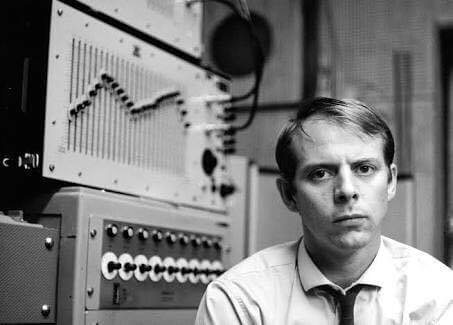

La música en la antigüedad.
Es aquella en la cual las manifestaciones musicales del hombre consisten en la extereorización de sus
sentimientos a través del sonido emanado de su propia voz y con el fin de distinguirlo del habla que utiliza
para comunicarse con otros seres.
Los primeros instrumentos fueron los objetos o utensilios o el mismo cuerpo del hombre que podían producir
sonidos.
Clasificación de instrumentos musicales primitivos:
- Autófonos o idiófonos: aquellos instrumentos que producen sonidos por medio de la materia con que la que
están construidos. Son los instrumentos más sencillos construidos por los seres humanos. Son
instrumentos de percusión. Por ejemplo, hueso contra piedra o hueso contra hueso.
- Membranófonos: el material sonoro es una membrana (intestino de animal) tirante atado sobre un
recipiente cualquiera o sobre un coco.
- Cordófonos: instrumentos de cuerda (hecha con intestino de animal), el arpa.
- Aerófonos: el sonido se origina en ellos por vibraciones de una columna de aire.
La música en la edad media.
La música en la Edad Media se divide en el Período Patrístico (hasta el año 840). En el Romántico (año 840
hasta el año 1250 en el siglo XII). En el Gótico (1250 a fín de la Edad Media y 1453, fines del siglo XV).
En el Período Patrístico apareció la Era Cristiana y la Era Media, en esta última la Historia de la música
se encuentra íntimamente ligada a la forma en que se desarrolló la liturgia cristiana, ya que se consideraba
a la música el vehículo por medio del cual los sacerdotes elevaban la palabra a Dios.
Las diversas formas musicales utilizadas en la liturgia cristiana debieron enfrentar la existencia de textos
y melodías profanas que trataron de penetrar en los oficios religiosos. Los personajes de la música profana
dedicados a la disposición de esta música fueron:
- Juglares: músicos ambulantes y plebeyos que divertían en fiestas y castillos.
- Trovadores: pertenecían a la nobleza y eran músicos y poetas que inventaban rimas y ritmos.
- Bardos: antecesor de los trovadores que cantaban proezas de sus héroes valiéndose del laúd.
- Ministeriles: verdaderos productores musicales que administraban música y formaban corporaciones o
gremios dedicados a brindar espectáculos musicales.
Entre el año 374 y el 397, san Ambrosio reunió aquellos signos que debían ser aceptados en un credo
antifonario naciendo así el canto ambrosiano. Entre el 540 y el 604 san Gregorio Magno recopiló himnos
eliminando los que tenían origen popular o pagano, dando nacimiento al canto gregoriano. Desde su nacimiento
la música cristiana fue una oración que se tenía que cantar con devoción tal como lo decía San Pablo
“Cantando a Dios con vuestro corazón”, así pues el texto es la razón de ser del canto gregoriano ya que “el
que canta reza dos veces”.
La melodía del canto gregoriano asimila tres estilos diferentes:
- El silábico: cada nota representada por una sílaba.
- El neumático: a una misma sílaba le corresponden 2, 3 o 4 sonidos diferentes.
- Las secuencias: intercalación de un texto en las notas del aleluya.
El texto es el que da sentido a la melodía y no se puede concebir el canto gregoriano sin texto, lo que
quiere decir que al interpretar el canto gregoriano, los cantantes han tenido que entender muy bien el
sentido del texto. Esta música se canta a capella sin acompañamiento instrumental, se canta al unísono o lo
que es lo mismo todos los cantores entonan la misma melodía. A esta forma de canto se le llama Monodia. Se
canta con ritmo libre.
El Rococó.
Es en siglo XVIII que el Barroco agotó un conjunto importante de sus posibilidades técnicas y expresivas para
dar paso al Clasisismo por lo que se conoce el tránsito hacia este período con el nombre de Rococó. Se ha
dicho que el Rococó es la última y desesperada manifestación estética de una aristocracia cuyo poder entraba
en agonía. El reinado de Luis XV y el Palacio de Versalles pertenecen por entero al espíritu del Rococó
francés.
Aunque no tuvo irradiaciones en el conjunto de los principales centros musicales de Europa, halló en Francia
y Alemania sus principales escenarios de desarrollo. En ambos lugares surgieron, tanto en la Música como en
la pintura, interesantes movimientos artísticos: Jean-Honoré Fragonard, François Boucher y Jean-Antoine
Watteau son nombres claves de la pintura rococó.
Figuras relevantes del rococó musical en Francia fueron Jean Phillipe Rameau
(1683-1764) y François Couperin
(1668-1773), sobre todo en la parte de su catálogo dedicada al clavecín. En Alemania se destacó Carl Phillip
Emanuel Bach (1714-1788), tercer hijo de Johann Sebastian Bach (1685-1750).
El italiano Domenico Scarlatti (1685-1757)
impregnó sus Sonatas para clave de muchos de los elementos del estilo rococó como elementos decorativos,
“adornos” en las melodías.
La música en el Clasicismo.
A partir de la segunda mitad del siglo XVIII europeo es donde aparece lo mejor del Clasicismo, basado en
elementos de estilo, el empleo de la dinámica graduada, la moderación expresiva y la supremacía de la esfera
melódica sobre la armónica. Aceptar estos rasgos como los únicos que distinguen el Clasicismo, sería
analizar parcialmente un período que, a pesar de su brevedad temporal, comparado con el Renacimiento o el
Barroco, encierra diversas complejidades, derivadas en muchos casos de las peculiaridades de la vida social,
política y filosófica de la época.
Durante las últimas décadas del año 1700 se produjo el derrumbe general del feudalismo, de la aristocracia y
del régimen de las monarquías absolutas. Una nueva clase social –la burguesía- tomaba entonces el impulso
final para alcanzar el poder político. Una aguda crisis religiosa surge en el período al debilitarse el
poderío de la iglesia católica por diversos conflictos entre reyes y papas, con el aumento del
protestantismo, al surgimiento de importantes descubrimientos científicos y a la aparición de una filosofía
de orientación racionalista.
Se desarrolla la Ilustración y el Iluminismo los cuáles definen la razón como vía esencial del conocimiento.
Se publica el “Diccionario razonado de las ciencias, artes y oficios” (escrito por los llamados
enciclopedistas), el cuál constituye la mayor prueba de que el hombre, con su privilegiada capacidad de
pensar, era capaz de rebatir los principios de la producción feudal, por lo que se conoce este siglo como
"Siglo de las luces".
Los músicos del Clasicismo le dieron a sus obras una especie de orden y estructura más cerca posible del
ideario de la perfección. Para ellos, el equilibrio de la composición, la pureza y transparencia sonoras y
la proporción expositiva en el discurso fueron requisitos importantes en la labor creativa.
La Escuela de Mannheim.

En la capilla de música de la corte del elector Carlos Teodorola de la ciudad alemana de Mannheim, nació un
movimiento creativo e interpretativo conocido con el nombre de "Escuela de Mannheim". La orquesta del
elector constituyó un estímulo para que compositores de la época fueran allí a desarrollar su trabajo: se
destacan Jan Vaslav y Karel Stamitz, Franz Xavier Richter y Johann Christian Cannabich, todos responsables
de la introducción definitiva de elementos de estilo clasicistas en la creación musical.
El formato de la llamada orquesta sinfónica, la instauración de la homofonía como textura protagónica, la
inclusión del clarinete en la orquesta, la aplicación de la forma Allegro de Sonata en los primeros
movimientos de sinfonías y obras de cámara, la utilización de la dinámica graduada (crescendi y diminuendi)
y otros recursos expresivos estuvieron en manos de los compositores e intérpretes que acudieron a Mannheim.
Los dos grandes músicos de la etapa clásica fueron los austriacos Franz Joseph Haydn
(1732-1809) y Wolfgang
Amadeus Mozart (1756-1791).
A Haydn pertenecen muchos de los aportes relacionados con el origen de la música moderna, definida como el
tipo de creación cuyos rasgos esenciales permanecen aún vigentes: estabilidad en la familias e instrumentos
de la orquesta, aplicación de la forma Allegro de Sonata en los movimientos iniciales de conciertos,
sinfonías, sonatas, cuartetos de cuerda y otros géneros camelísticos, y el empleo consciente del timbre de
cada medio sonoro según las cualidades expresivas buscadas por el compositor en determinado pasaje de una
partitura.
En cuanto al “estilo mozartiano”, suele ser comparado con la música de Haydn. Mozart y Haydn se profesaron
una admiración recíproca y hay quien señala que si bien Wolfgang Amadeus creó muchas de sus obras inspirado
en la producción del llamado “padre de la sinfonía”, este último concibió algunas de sus obras de madurez
siguiendo el delicado espíritu del estilo mozartiano. En efecto, tanto Haydn como Mozart –a pesar de los 24
años que los separaban cronológicamente y la individualidad de sus propios estilos- representan una unión de
potencialidad creativa, sin cuya existencia resultaría imposible considerar la producción musical del
Clasicismo.
La revolución Beethoven.
Han existido históricamente una serie de polémicas relacionadas con la estética del músico alemán Ludwig van
Beethoven (1770-1827), las cuales plantean si se clasifica dentro del Clasicismo o dentro del
Romanticismo. Beethoven
unió la creación musical de dos siglos, las particularidades con que dicha unión fue realizada, el talento
del artista que extendió los horizontes del Clasicismo hasta introducirlos en el Romanticismo.
La Revolución Francesa de 1789 significa la toma de poder político por parte de la burguesía. El
incumplimiento de sus postulados iniciales y “Libertad, igualdad, fraternidad”, causa un profundo sentido de
frustración que se revela en la creación artística.
Beethoven encarna el transito del Clasicismo al Romanticismo. Identificado originalmente con los ideales de
la Revolución Francesa de 1789, concibe obras de gran fuerza expresiva donde suele aparecer la categoría de
lo heroico.
La música en el Romanticismo.
La palabra Romántico comenzó a utilizarse hacia mediados del siglo XVI. En los últimos años del siglo XVII,
comienza como una reacción contra el clasicismo.
Dentro de los conceptos de un alto idealismo, el romanticismo no solamente acepta si no alienta la
sobreposición de extremos opuestos: amor a la soledad del individuo y a la vez amor al prójimo; un disfrute
de lo exótico junto a una nostalgia por lo familiar; una afición a lo novedoso y al desarrollo junto con
ansia por el pasado.
El romanticismo es claramente universal y de todo los tiempos y no puede limitarse a solo un período de la
historia. Por una parte, la nueva sociedad del siglo XIX, hija de las ideas de la revolución francesa, desea
liberarse del pasado y, así, conseguir un arte que exprese el comportamiento y las ideas de su tiempo.
A medida que avanza el siglo XIX, hay una gran influencia, que va creciendo, cada vez más, de la literatura
en la música: en Alemania los poemas de Wolfgang Von Goethe y Friedrich Von Schiller, fueron utilizados por
Schubert, Schumann, Brahms, etc., para producir una de las manifestaciones musicales-poéticas más
importantes de todos los tiempos, el Lied Alemán. Asimismo escritores franceses y británicos fueron los
inspiradores de diversas obras de Beethoven, Berlioz, Verdi y otros.
El romanticismo supone el desarrollo de los nacionalismos. Esto se nota en la acentuación de las diferencias
entre los estilos musicales nacionales, y llega a venerarse a la canción popular como expresión espontanea
del alma nacional.
También aparece el drama musical. Hay un sentido profundo y definitivo del “colorido” sonoro, lo que permite
enriquecer el vocabulario musical con los medios que transforman y amplían el arte sinfónico de los tiempos
modernos.
El siglo XIX será el siglo del piano, gracias a sus posibilidades polifónicas, sonoras y de virtuosismo
extraordinario.
Postromanticismo.
Los finales del siglo XIX, y los comienzos del siglo XX fueron testigos de las últimas etapas del
romanticismo, y de la transformación del lenguaje romántico en el nuevo lenguaje musical. Este movimiento se
produjo principalmente en Alemania. Sin embargo dos fuerzas desafiaban la posición musical en Alemania. Una
era el nacionalismo, y la otra era el surgimiento de una nueva escuela de composición en Francia. Los
últimos treinta años del siglo XIX fueron relativamente pacíficos en Europa, el comienzo del siglo XX se
caracterizó por un creciente desasosiego social y un aumento de la tensión internacional: la primera guerra
mundial (1914-1918). En el reino de la música hubo tensiones e inquietudes similares, y durante estos años,
concluyó el período clásico-romántico.
Uno de los rasgos característicos de este período en Alemania fue una resurrección del interés por la ópera
sobre el cuento de hadas.
Richard Strauss (1864-1949), compositor y director de orquesta alemán, y uno de
los orquestadores y
polifonistas modernos más excepcionales. Su obra puede dividirse en 3 periodos: en el primero creo su Sonata
para violonchelo y piano. En el segundo período perfeccionó el poema sinfónico y creo su famosa obra “Don
Juan”, al Tercer Período pertenecen sus operas “Salome” y “Electra”.
La música del siglo XX.
Para comprender la música en el siglo XX, es importante acercarse primero a la del siglo XIX, y en especial a
una corriente llamada impresionismo. Esta corriente supuso una auténtica liberación, se va a luchar por una
música más individual y personal, saliéndose para ello de las normas establecidas, la música impresionista
pretende destacar el impacto que provoca la obra al ser escuchada. Se aplican nuevos acordes, colores y
sonoridades. En esta música el sonido va a constituir el alma de la música.
- Claude Debussy (1862-1918), nacido en Francia generó ideas completamente
nuevas en la forma, la
orquestación y fue uno de los renovadores más eficaces de la Historia de la música en el mundo
occidental. A partir de la ruptura que supuso el impresionismo, el panorama artístico europeo, lo mismo
en arte que en música va a cambiar enormemente. Cada músico tiende a crear su arte independiente, además
los diversos estilos se irán sucediendo a gran velocidad.
- Ígor Stravinsky (1882-1971), una de las figuras más importantes del siglo
XX. Toco en su obra los
aspectos más variados, investigó en todos los aspectos de la música, se subió al carro del neoclasicismo
donde trata de acomodar su música a la de la finales de barroco. Si hay algo que caracteriza al siglo XX
es la ruptura con la tonalidad “Atonalismo”. Esta regla consiste en crear una Música completamente
distinta, obviando las reglas que rigieron durante siglos de ceñirse a una tonalidad. Primero se rompe
con la armonía, luego con la melodía, el ritmo y con todo lo establecido.
- Bela Bártok (1881-1945), músico húngaro, es uno de los músicos que más va a
influir en la música del
siglo XX. Bartok consigue unir la música moderna con la tradicional, creando un lenguaje nuevo.
Mientras tanto en Italia aparecen una serie de músicos que incorporan a su música, nuevos objetos sonoros: la
incorporación de ruidos. Esta corriente se llamó Futurismo y afecto tanto a la música como a la literatura y
al arte. El futurismo pone como punto de partida el ruido, no el sonido. En Francia mientras tanto, surgió
paralelamente el Bruitismo (del francés Bruit, ruido), que parte de ese mismo punto.
Desarrollo en la tecnología.
Música electrónica.

El vertiginoso desarrollo de la tecnología a partir de la Segunda Guerra Mundial (1939-1945) trajo como fruto
la incorporación de sintetizadores y a la música creada por computador (que se podría llamar "música
cibernética").
La primera manifestación de la música asistida por medios electrónicos fue la "música concreta", que se
creaba a partir de grabaciones magnetofónicas de ruidos y de sonidos naturales.
En 1952 se creó en Alemania el primer estudio exclusivo de música electrónica. Esta música esta
exclusivamente creada con sonidos producidos electrónicamente y parte desde lo que se llama “tono
sinusoidal”, un sonido puro, sin armónicos, que es físicamente desagradable y que hay que elaborar con
aparatos muy complicados.
Entre las primeras obras puramente electrónicas se encuentran Estudio I y Estudio II del compositor alemán
Karlheinz Stockhaussen.
Sin embargo la música electrónica creó descontento en los compositores desde el principio ya que aunque
permitía un control exacto y una precisión absoluta sobre la obra, este resultaba pobre y parecía carecer de
vida. Por ello, muchos compositores unieron la música concreta y la electrónica, para crear un género que
goza de gran popularidad desde entonces y hasta hoy en día, la música electroacústica.
En nuestros días, el panorama musical mundial se caracteriza por un pluralismo cultural y por la irrupción
de las culturas y músicas populares en la vida diaria de todos.
El abismo entre compositor y público es hoy más acusado que nunca y la música "académica" parece haberse
distanciado de los gustos y preferencias del público, más interesados por las músicas más populares y
cercanas, tales como el rock, el pop, etc.


{kind=link}
{kind=link}
{kind=link}
{kind=link}
{kind=link}
{kind=link}
{kind=link}
{kind=link}